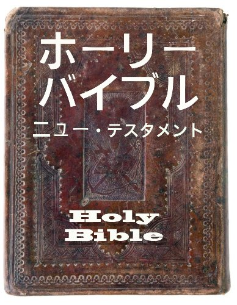

なぜ聖書を読むのでしょうか？
- イエス・キリストが神の子であると信じている
- 彼はイエスを救い主として受け入れました
- 私たちはイエスの教えと私たちの人生に対するイエスの計画に従って人生を生きることを決意しました。
イエスの信者は、聖書は人類への神のメッセージであると信じています。
神が意図されたように真に個人的に神を知るためには、聖書を読む必要があることを彼らは知っています。
イエスの信者、つまり、イエスが地上にいた時の教えに従って生きる人であるためには、聖書を読む必要があるのです。イエスが神の御子であると信じる「理由」と、神が彼を救い主として地上に遣わされるようになった出来事について知る必要があります。
これまで聖書を読んだことがなくて、多少知っていることがあっても聖書について多くを知らなくても、それはあなただけではありません！この冊子は、以下を含め、聖書がどのような書物であるかを理解するのをお手伝いします。
- 聖書はどのように書かれたか
- 聖書の中の物語や節を見つける方法
- 聖書が伝える主な物語
聖書を読んで神を知るようになると、神はあなたの御霊を祝福し、そば近くに引き寄せてくださいます！